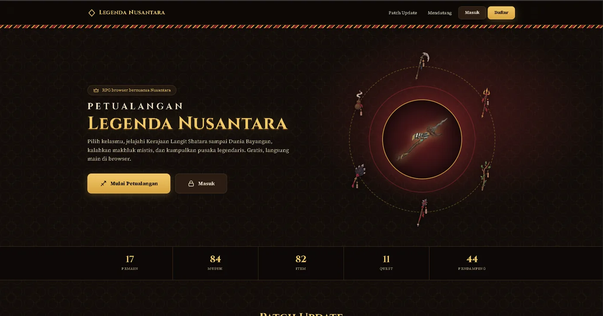

Game RPG browser
Legenda Nusantara
Game RPG berbasis browser dengan suasana Nusantara. Pemain memilih kelas, menjelajahi Kerajaan Langit Shatara sampai Dunia Bayangan, mengalahkan makhluk mistis, dan mengumpulkan pusaka legendaris.
- musuh
- 84
- item
- 82
- pendamping
- 44
- Akun pemain dengan alur Masuk dan Daftar
- Data musuh, item, quest, dan pendamping yang tertata rapi
- Halaman patch update dan daftar fitur yang akan datang
- Tampilan bernuansa batik dengan palet emas dan merah, serta pusaka yang berputar di bagian utama